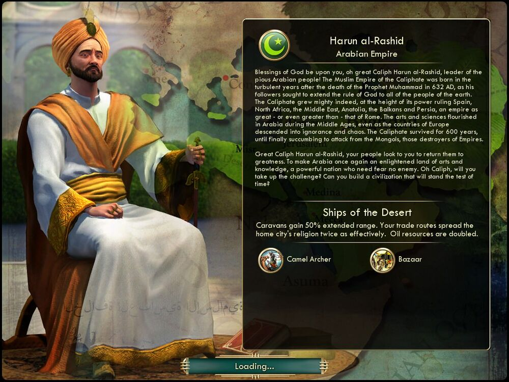

하룬 알 라시드 Harun al-Rashid아라비아 Arabia |
|  |
| 오, 신실한 아라비아의 지도자, 위대한 칼리프 하룬 알 라시드여. 그대에게 하늘의 축복이 있기를! 예언자 무함마드 사후 환란의 시기에 무함마드의 추종자들이 하늘의 말씀을 전 세계에
전하기 위해 기원후 632년에 아랍 제국을 건설했습니다. 아랍 제국은 그 전성기에 스페인과 북아프리카, 중동, 아나톨리아, 발칸 제국, 페르시아를 아우르는 대제국이었습니다. 로마
제국만큼이나 강대한… 아니, 어쩌면 더 강대한 제국이었을 것입니다. 유럽 국가들이 무지와 혼란에 빠져 있던 중세에도 아라비아에서는 예술과 과학이 꽃을 피웠습니다. 600년간 유지한
아랍 제국은 이미 여러 제국을 정복한 몽골의 공격에 무릎을 꿇고 말았습니다.
위대한 칼리프 하룬 알 라시드여, 백성은 그대가 과거의 영광을 되찾아주리라 기대하고 있습니다. 아라비아를 다시금 예술과 지식이 꽃 피는 문명의 땅으로, 어떤 적도 두려워하지 않아도 되는 강대국으로 변모시켜주리라 기대하고 있습니다. 칼리프여, 이 도전을 받아들이고 세월의 시련을 이겨낼 문명을 건설해 주시겠습니까? |
| 속성 | |
|---|---|
| 특성 |
사막의 배 (Ships of the Desert) 대상의 범위가 50% 증가합니다. 플레이어의 교역로에서 종교를 두 배 더 효율적으로 전파합니다. 석유 자원이 두 배가 됩니다. |
| 고유유닛 |
낙타 궁수 (Camel Archer, 낙타 궁병) 기사를 대체하는 고유 유닛입니다. 전투력이 20에서 17으로 감소하였으나 원거리 공격(원거리 전투력 21)이 가능합니다. 기사와 같이 공격 후에 이동이 가능합니다. |
| 고유건물 |
바자르(Bazaar)
시장을 대체하는 고유 건물입니다. 시장의 원래 기능(금 +1, +25%)에 더해 금 +1을 추가로 제공합니다. 해당 도시 주변 타일에 있는 사치 자원을 개발하면 해당 사치 자원을 2개로 만듭니다. 석유와 오아시스 타일에 금 2가 추가됩니다. |
| 시작지점 | 사막 |